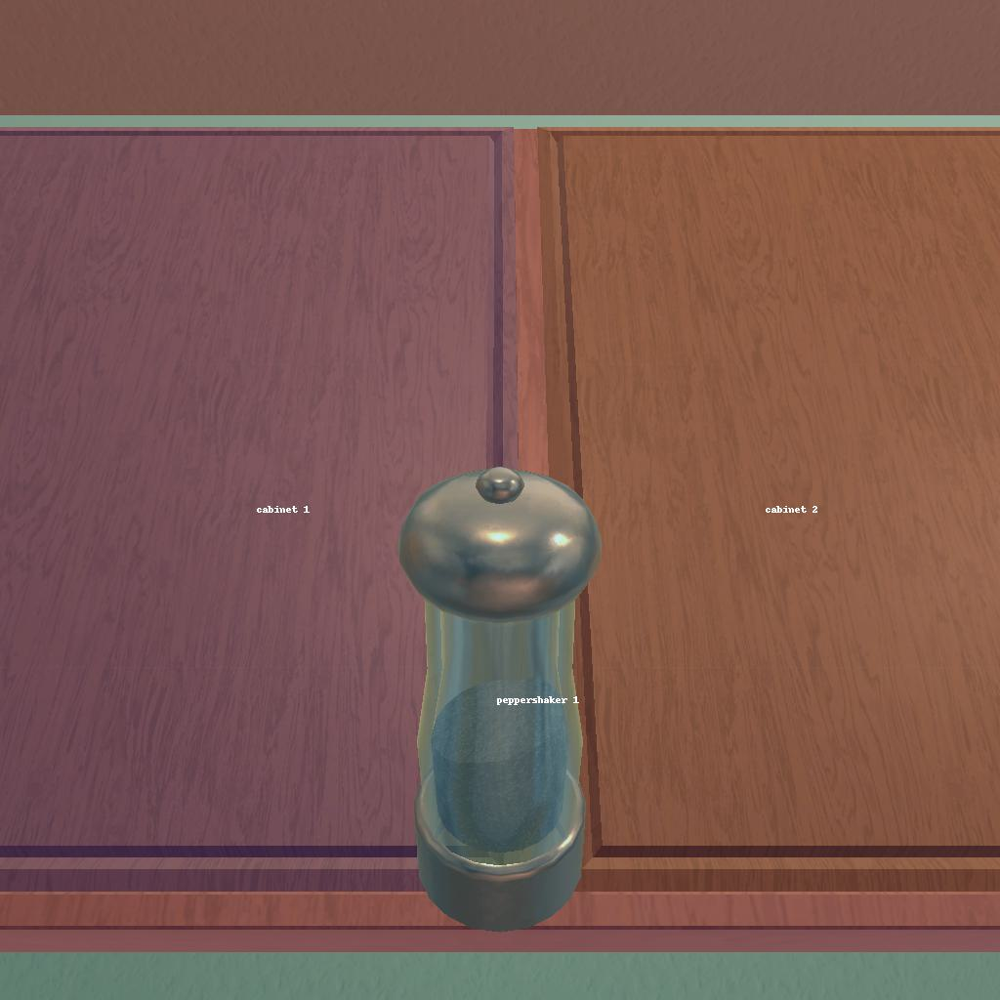

---------------------------------------------------------task: 20---------------------------------------------------------
--------------------------------------------------------------------------------------------------------------------------------------------------------------------
--------------------------------------------------------------------------------------------------------------------------------------------------------------------
Step:--------------------------------------------------------------------------13-------------------------------------------------------------------------------
----------------------------------------
VLM Prompt:
Image1:
Image2:
Image3:
**Instruction**
1. Analyze the provided image to identify all visible household objects, focusing on those relevant to the task description "put a hot apple in garbagecan."
2. Use the analysis of the image and the task hint "The agent must find an object of the desired type, pick it up, go to a microwave, heat the object with the microwave, then find the correct location to place it, and put it down there. The agent does not need to use the microwave button or open the microwave to heat the object, and the agent just needs to do action that is "heat the object with the microwave"." to answer the question: what is the most reasonable action in the choices for the task description "put a hot apple in garbagecan"?
4. Decide and write the answer using the template: The answer is: (i): , where i is the real number. If there is no desired object in the image, search every place based on **Initial Observation** to find the object. And if no one is exactly correct, choose a similar answer.
**Initial Observation**
You are in the middle of a room. Looking quickly around you, you can see cabinet (1-18), countertop (1-4), sink (1), drawer (1-7), sinkbasin (1), coffeemachine (1), microwave (1), garbagecan (1), stoveburner (1-4), toaster (1), fridge (1)
**Answer Choices**
(1): go to cabinet 2
(2): go to countertop 1
(3): go to cabinet 3
(4): go to cabinet 4
(5): go to cabinet 5
(6): go to sink 1
(7): go to cabinet 6
(8): go to drawer 1
(9): go to drawer 2
(10): go to sinkbasin 1
(11): go to cabinet 7
(12): go to cabinet 8
(13): go to coffeemachine 1
(14): go to microwave 1
(15): go to cabinet 9
(16): go to countertop 2
(17): go to cabinet 10
(18): go to drawer 3
(19): go to drawer 4
(20): go to garbagecan 1
(21): go to drawer 5
(22): go to cabinet 11
(23): go to cabinet 12
(24): go to cabinet 13
(25): go to cabinet 14
(26): go to stoveburner 1
(27): go to countertop 3
(28): go to stoveburner 2
(29): go to stoveburner 3
(30): go to stoveburner 4
(31): go to drawer 6
(32): go to cabinet 15
(33): go to cabinet 16
(34): go to cabinet 17
(35): go to cabinet 18
(36): go to toaster 1
(37): go to drawer 7
(38): go to countertop 4
(39): open fridge 1
(40): put peppershaker 1 in/on fridge 1
(41): cool peppershaker 1 with fridge 1
(42): examine peppershaker 1
(43): examine fridge 1
**Answer**
Let's think step by step by following the instructions.
----------------------------------------
----------------------------------------
Original Response:
The task is to "put a hot apple in garbagecan." The hint provided indicates that the agent must find an apple, heat it with the microwave, and then place it in the garbagecan. Since the agent does not need to use the microwave button or open the microwave, they only need to perform the action of "heat the object with the microwave."
From the initial observation, we know the location of the microwave and the garbagecan. However, the images provided do not show any apples or the interior of cabinets where an apple might be stored. Therefore, the agent will need to search for an apple, which is commonly stored in a fridge or a cabinet.
Based on the available answer choices, the most reasonable action to find an apple would be to search the fridge first since it is a common place to store fruit to keep it fresh.
The answer is: (39): open fridge 1.
----------------------------------------
----------------------------------------
>>> Refine Original VLM Response and Get Pure Action: open fridge 1
----------------------------------------
-----------------------------------------------------------------
Running time: 12.001415491104126 seconds
Total Money: 12.936650000000004
-----------------------------------------------------------------
-----------------------------------------------------------------
Text Observation:You open the fridge 1. The fridge 1 is open. In it, you see a cup 1, a cup 2, a bowl 1, and a bread 1.
-----------------------------------------------------------------
UNSUCCEED